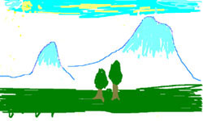

Undanik
Paryv5im parygam1
Ys A-akyl3an Ca3anyn ym1 Ys ngaryl ym carovnu Ararad3an ta,dovm1
|  |
Ovzovm ym kyz /ano;axnyl im undaniki hyd1 Im undaniku pa.gaxa/ e wyx hocovx` ha3rs5ma3rs5yrgov kov3ryrs5y.pa3rs yv ys1
Ha3rs warort e5
ma3rs dna3in dndysovhi5
awac kov3rs tbroxovm tasawantovm e ha3ox lyzov yv craganov;3ovn5
mi]nyg kov3rs soworovm e Yryvani bydagan hamalsarani irawapanagan fagovldydovm5
'okr y.pa3rs a-a]in tasaranovm1
A3skanu im undaniki masin1
Yryvani :iv 170 Tbrox
A-akyl3an Ca3any
(Wyratar2i4r n,ylow P7 @y-nargi n,anu)